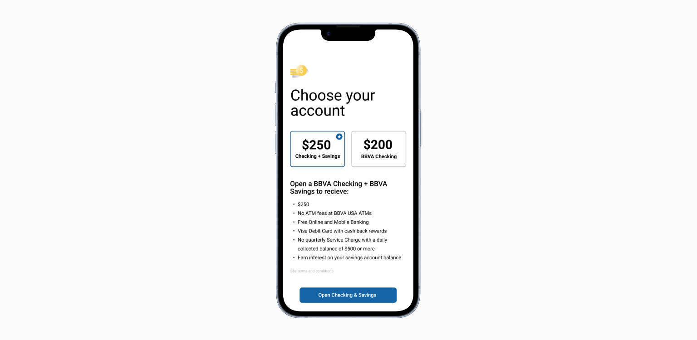
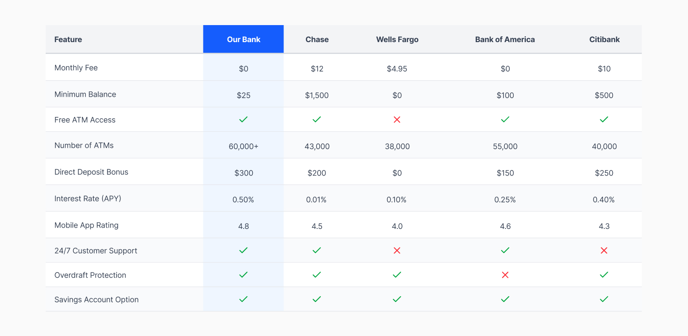
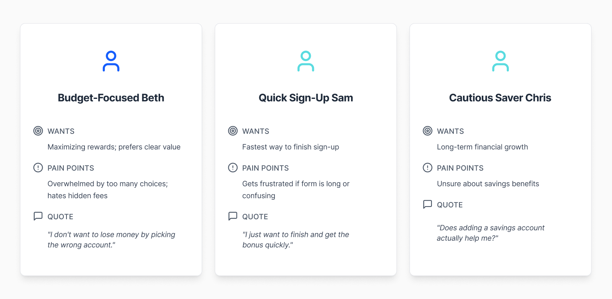
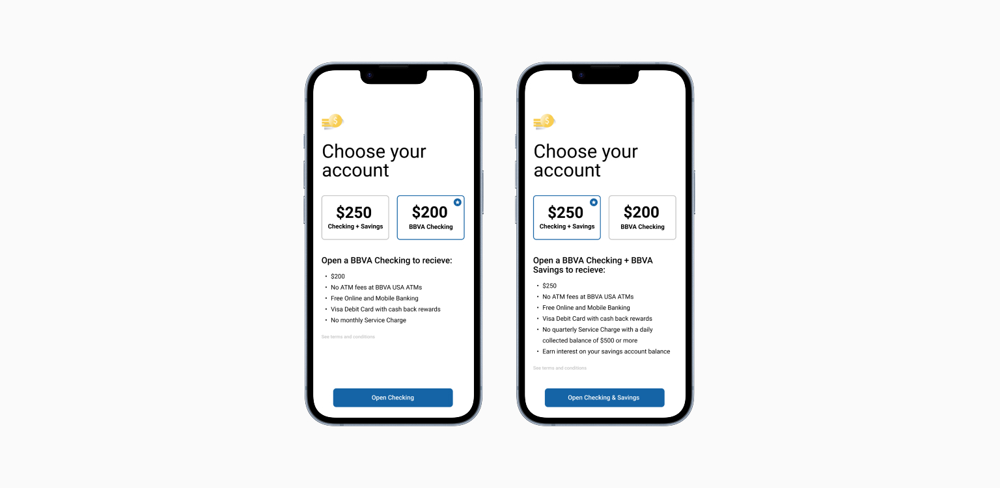

BEHAVIORAL ECONOMICS
Sea of Blue Campaign

The Sea of Blue Campaign proposal
impact & results
Strong signals. No final data.
BBVA USA was acquired by PNC Bank in 2021 before the campaign launched. The project was discontinued as part of the acquisition. What follows are validated signals, not conversion numbers.
Stakeholder alignment at every level
The behavioral economics approach generated strong internal support across marketing, product, and executive teams. Leadership pushed to skip standard testing and go directly to live deployment, a signal that the design rationale was compelling enough to bypass the usual hesitation around new methodology.
A reframe the team recognized
The project shifted how the team approached acquisition problems, moving from how do we show the offer to how do we architect the decision. That shift was recognized internally as meaningful thinking beyond standard promotional design.
CONTEXT
A campaign designed to stand apart.
Sea of Blue was BBVA's annual acquisition campaign, a seasonal push to attract new checking account customers and encourage them to add a savings account at the same time. The incentive was a cash bonus: $250 for checking alone, $265 for the bundle.
The business challenge was straightforward to state and difficult to solve: how do you differentiate a bonus offer when every major bank is running one? And how do you encourage customers to add savings without pressuring them into a product they did not come for?
Most customers signed up for checking and stopped there, not because savings held no value for them, but because they did not know what they were leaving on the table.

Competitor offers matched on amount but not on framing or decision architecture.
THE BUNDLE PROBLEM
Same offer. Wrong framing.
A Market Full of the Same Offer
Competitor bonuses ranged from $200 to $500. BBVA's offer matched but did not exceed the market. The incentive alone could not do the work. Multiple banks were making nearly identical promises with nearly identical presentation: excessive text, weak visual hierarchy, no clear comparison between options. Competing on bonus amount was not a viable strategy.
Checking First, Savings Never
Marketing's core concern was sequencing. Checking came first in the flow. Most customers signed up for checking and never considered savings, not out of disinterest, but because the value of adding savings was not being communicated at the moment it could influence the decision. By the time they reached savings, the primary goal felt complete.
Nudging Without Manipulating
Pre-selecting the bundled option was the strongest lever available but it carried real risk. If it felt like a dark pattern, it would damage trust and generate complaints. The ethical boundary was clear: the design had to make the better choice the obvious choice, not the hidden one. Every customer had to feel informed, not steered.
READING THE MARKET
The market showed the gap.
Personas showed the path.
Competitive Analysis
Eight major banks were audited. The findings were consistent: most offered similar $200 to $300 bonuses presented with dense copy and no meaningful visual comparison between account options. None created clear differentiation. None made the value of adding savings feel immediate or tangible. The gap was not in the offer. It was in the architecture of the decision.
Personas
Three personas guided the design. Budget-Focused Beth needed to see the dollar difference immediately to act. Quick Sign-Up Sam wanted to complete the process fast and would default to whatever was pre-selected. Cautious Saver Chris was open to savings but needed reassurance that adding it was a sound decision, not a sales tactic. All three would respond differently to the same interface. The design had to work for each of them.

Three distinct motivations, one interface that had to work for all of them.
REFRAME THE DEFAULT
Making the better choice obvious.
The Hypothesis
If the bundled option was pre-selected and the offer was framed through loss aversion, showing customers what they would give up by opting down to checking only, they would be significantly more likely to complete both accounts. The $15 difference was not the point. Feeling like you were leaving something behind was.
The Journey Map
I mapped the full decision path to confirm that either choice, bundle or checking only, led to the same product page with a different account selected. This was the structural proof that pre-selection was not deceptive. Both paths were transparent. The default was nudging, not hiding.
The Design
Wireframes and a prototype were built and tested using the loss aversion framing. The bundled option was pre-selected with clear visual distinction. Opting down to checking only required an active choice and the interface made clear what that choice cost. Testing confirmed the approach was perceived as helpful rather than manipulative when the framing remained transparent.
What Stopped It
Stakeholders were convinced enough to skip standard testing and go directly to live deployment, comparing this year's results against a control. Before that could happen, PNC's acquisition of BBVA discontinued the campaign entirely.

The same choice, framed differently. Pre-selection made the better option the default without hiding the alternative.
REFLECTION
What a cancelled project still taught me.
Pre-selection and loss aversion are legitimate tools, but this project clarified how thin the ethical line really is. The design worked because both choices stayed visible and the framing was honest. The acquisition ended the work before any live data came in, which meant the hypothesis was never tested at scale. That outcome shaped how I think about measurement frameworks now. If a design decision depends on live validation, the measurement plan needs to exist before launch, not after.